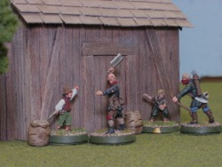
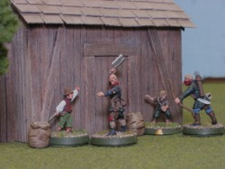

Here's Yet Another Scouring of the Shire (2019) scenario, this time The Old Storehouse. Sharkey's Rogues have collected all the food supplies, and the hungry hobbits must raid the storehouse, collect the supplies, and get four supply counters off the board to win.
There are a number of special rules in play. Favoring the hobbits, the Evil models begin in Sentry mode, allowing the hobbits to attempt to win by stealth. Also, though dark of night limits Shooting range to 12", it also awards a +1 when shots roll to Wound. On the other hand, the hobbits are too nice to actually kill, so instead of dying an Evil model effectively becomes Paralyzed when it loses its last wound in combat.
Those last two words are interesting because there's an ambiguity as to what happens when a model loses its final Wound through Shooting rather than Combat: death or paralysis? Since the rule's flavor test explicitly says the "Hobbits are trying to infiltrate ... not to cause any harm," I ruled in favor of paralysis.
This is a reworking of "The Old Store House" scenario in the 2004 version of Scouring of the Shire. I never played the older version, so I can't compare from experience, but even a quick look at the rules shows a number of significant differences in the new version compared to the old:
The setup and Sentry rules have been heavily reworked, too. There used to be fewer sentries at start, which made it easier for the hobbits to escape detection, and more traps, which, having no moral compass, might kill Ruffians even if the hobbits themselves wouldn't. But the hobbits had to take their loot off a specific board edge, which made it easier for the Ruffians to concentrate.
So this clearly isn't just the same scenario with a new hat. Let's see how it plays!
(Click on any image to see an enlargement.)
The Good force has Baldo Tulpenny and Fatty Bolger leading four Tookish Hunters and eight Hobbit Militia. Against them, Evil has the same Ruffians as my previous two efforts, lead by Rowan Thistlewood. I figured out why the same Ruffians keep showing up: the mix is what's contained in GW's Ruffians pack. It's always nice when they work out that way. I've been counting the guy that Rowan's pointing to as a regular Ruffian, but on closer examination he's clearly got a bow on his back. (He won't count as an archer in this replay, though, since I didn't notice until I wrote this up.)
We're back to a 4'x4' board, with the storehouse containing all the food in the middle. Let me give a shoutout here to the Tales of Middle Earth YouTube channel, because they have a great video on making the storehouse which I used as a guide.
The hobbits set up in two groups, one led by Fatty in the southwest corner (first two images) and the other with Baldo in the northeast corner (third and fourth images). The Ruffians, in Sentry mode, form a ring around the storehouse.
Baldo then places eight traps (the black poker chips). They can go anywhere as long as they are at least 6" away from the storehouse. Baldo figures maybe he can cause some early casualties and puts them near where the sentries are liable to wander.
Good starts with Priority. It's a pretty quiet turn, as the hobbits sneak up as fast as their little legs will take them, and the Ruffians all wander around, as sentries do.
Evil Priority, 4-2.
The sentries again roam hither and yon. The Ruffians set off some traps, one of which is a dummy and couple others are duds. But a hole does catch one Ruffian (upper left of first image) and a couple of other Ruffians are tripped (second image).
The hobbits move to prepare for Ruffians nearing them next turn.
Good Priority, 1-1.
The hobbits would definitely have preferred Evil to move first. But there's no such thing as an anti-Heroic Move, so they figure out how best to not set off the alarm. Fatty's group swings counter-clockwise, using the trees as a barrier. Baldo's group stays put, picking up stones and notching their arrows.
The Ruffians meander. Rowan runs into a tripwire and falls over (first image, upper right).
Evil Priority, 6-4.
The Ruffians continue to wander. Rowan rolls a '1' and decides to stay down, working out the cramp in his leg. The Ruffian nearest Baldo (second image) rolls a '6' and gets close enough to raise the alarm. In reaction, the hobbits remain in place to maximize their Shooting.
In the south, Fatty's group forms a conga line and marches east.
Two Tookish Hunters, four Hobbit Militia, and ace stone-thrower Baldo Tulpenny himself take aim at the nearest Ruffian ... and whiff it! The one or two missiles which hit fail to Wound, and even Baldo's Might point can't help him with his miserable dierolls.
The alarm is raised!
Evil Priority, 6-2.
The Ruffians rush, except the archers who line up their shots. The hobbits stay put in hopes of knocking some bad guys out.
The Evil bowmen miss. Good shooting starts off poorly, with Fatty's group scoring just one Wound on seven shots. But Baldo's followers do better and three Ruffians are sent to the land of Nod.
There are two Combats this turn. One Ruffian faces two hobbits but wins anyway despite being outnumbered. He fails to Wound, though. His compatriot fighting Baldo does better, winning the combat and drawing first blood. With two Wounds and two Fate, Baldo's in no immediate danger, though.
Good Priority, 1-1.
Baldo's group is glad to have Priority; his men engage the two active Ruffians, leaving three hobbits free to leg it to the storehouse.
Fatty Bolger is less happy; he'd rather see what the Ruffians do and then react. So his group stays put, daring the Ruffians to get within missile range. Rowan Thistlewood moves forward but carefully stays out of stone range; both archers stay in place to shoot. The other Ruffians decide to duck into the woods to get out of line of sight.
Shooting sees the hobbits knock out a Ruffian bowman. The now-lone awake Ruffian bowmen (not in the first image; he's on the edge of the first Turn 5 image) misses.
Baldo's troops win both Combats. Neither ultimately has any effect, though. The hobbit in the 1:1 attack fails to Wound, and though the surrounded Ruffian does go down in a hail of blows, he wakes right back up again at the end of the turn, the first Ruffian to manage that so far.
Evil Priority, 5-1.
With only two active Ruffians in the north and the hobbits well spread out, it doesn't seem worth Baldo spending his only Might point for a Heroic Move.
Rowan goes to help wake up the nearby archer. The other archers stays put to fire again, and the remaining awake Ruffians engage where they can and run get near the hobbits where they can't.
Fatty's hobbits still have targets for their stones and arrows, so they stand pat. Baldo's group gets good odds against the engaged Ruffians and even so has an extra hobbit to send running for the storehouse.
The Evil bows miss in the Shooting phase but Fatty's hobbits knock out two Ruffians. Luck continues going the Good way in Combat, with the hobbits winning both combats, though only one knock-out is achieved.
The Ruffians finally get some decent results in the End phase, where Rowan succeeds in waking up the archer in the south. Two Ruffians in the north wake up as well.
Good Priority, 6-1.
Now it's Rowan's turn to decide to save his Might point.
Fatty's group continues to be nailed to the ground. Baldo and a couple friend Charge the nearest Ruffian; the other hobbits run towards the storehouse, being careful to stay out of Charge range.
A Ruffian whipman reaches Fatty's Militia, his whip having no effect. Rowan moves to help another slumbering Ruffian, while the other Ruffians engage where they can.
Shooting sees the hobbits taking a Wound off Rowan -- he doesn't get knocked out because he didn't lose his last Wound -- but otherwise no one has any effect.
In Combat, two Militia pretty easily handle the whipman. In the north, the Ruffians win all the Combats, but can't manage even a single Wound!
In the End phase, the Ruffian nearest Fatty's line gets unusually brave and decides to wake up. The rest of the slumbering Ruffians continue keeping their heads down.
Evil Priority, 6-5.
The Ruffians Charge everywhere they can, except for one guy who moves to wake up a buddy to help out. Even the archers move a bit in hopes of being able to Charge in future turns, as their missiles just aren't having much effect.
But maybe that judgement is premature, as during Shooting a bowman kills a Hobbit before being knocked out by a stone (the rightmost figures in the first image).
The first death in this scenario is followed by others in the Combat phase, as Rowan and a Ruffian in the north are able to slay their Militia foes, with only one Ruffian in return getting knocked out.
Evil's fortunes do not continue into the End phase, as none of the seven knocked-out Ruffians awakens.
Casualties: Good 3
Good Priority, 6-6.
So many Ruffians are asleep that the hobbits can use minimal sacrificial forces to tie up the free Ruffians and then have everyone else head for the supplies. A couple should reach the storehouse next turn.
Evil chases where he can. There's no Shooting this turn, as everyone is either engaged or made a full move.
Evil's Combat luck holds as Rowan kills the Militia attacking him, and Fatty is saved only by his Fate point. In the north another Militia dies (the middle and right images show the same casualty) and only one Ruffian is knocked out.
Casualties: Good 5
Good Priority, 4-1.
Rowan again saves his Might. Though he'd like to move first, there are too few Ruffians nearby to really make it worth his sole Might point.
Fatty, despite the disaster of last turn, bravely ties up Rowan again. The rest of the hobbits run for the storehouse, with three actually getting into base contact.
There is again no Shooting. In Combat, Fatty and another hobbit in the south (left of first image) die. But the two engaged hobbits at the storehouse win their combats, and a Ruffian is knocked out (not shown in the second image but recorded in the third, though it's hard to see).
The End phase sees only two Ruffians wake up, and unfortunately for Evil, they are the farthest away from the action. Good picks up three supply markers.
But I forgot about the Evil victory conditions, which are "reduce the Good force to 50% or less of its starting numbers." So Evil won this turn, having killed exactly half the Good troops. But I didn't realize it at the time and kept playing. Since the result was interesting, I'll keep going here, too.
Good Priority, 5-2.
Again, Rowan is too far away for a Heroic Move. The hobbit strategy is simple: if you've got a supply marker, run for the nearest board edge; if you don't, run toward the storehouse.
The Ruffians run to where the action is in the center, barring two men who try to help awaken the still-numerous slumberers.
A Ruffian archer (left of first image) makes a half move and so there's a single shot this turn, but he misses.
Baldo knocks out his opponent, but at the cost of his only Might point. Still, he's pretty far away from anyone else so if that Ruffian stays asleep for a turn or two, he should make it off the board.
The hobbits also win the other Combats this turn, and a few more KOs occur. At the end of the Combat phase, all the Ruffians in the north are lying down on the job!
Fortunately for Evil, two Ruffians nearest the storehouse rouse themselves, as does one fellow in the south. A fourth hobbit picks up a supply marker.
Evil Priority, 6-3.
The two remaining hobbits in the south are swarmed. The two active Ruffians in the north Charge the nearest hobbits, but Baldo and a Militia cart their supply tokens 4" towards a board edge.
There's no Shooting this turn.
The stout Militia in the south facing 2:1 odds (first image) wins his Combat anyway, though he can't follow through with a knockout. His nearby compatriot isn't so lucky, though, and Rowan shanks him.
The Ruffian brave enough to take on two hobbits (second image) wins his Combat also. But he can't Wound either, and all he accomplishes is pushing his foes another inch towards the edge of the board, where they want to go anyway!
There are still a lot of sleeping Ruffians, and they appear to be deep in REM sleep because none of them wake up.
Good Priority, 4-1.
The lone hobbit near Rowan can't outrun him, so Rowan again saves his Might knowing he'll be caught anyway. In return for his forebearance, the hobbit Charges him, only to have Rowan's lads trap that hobbit in turn.
The only other hobbit without loot runs toward the storehouse (right side of second image) while the three hobbits with supplies run to the board edge. Baldo is getting close and it looks like Evil won't be able to stop him (third image, right; the hedges in the upper right corner mark the board edge).
One Ruffian does catch a hobbit with a supply marker (second image). The other awake Ruffian moves towards the fleeing hobbits, but stops a bit short to see if he can get his friend to help him (second image, right center).
Rowan decides its finally time to use his Might point to call a Heroic Combat. The hobbit thought he'd prevent Rowan's move, but now Rowan should be able to slingshot towards the escaping hobbits, bringing three men with him.
But Fate has a funny sense of humor. The five Evil dice are '1,2,2,3,4' and, inevitably, the hobbit's sole die gets a '5' and the hobbit wins the Combat! He fails to do any damage, but he's delighted to have survived and made Rowan waste his Might point!
The other Combat (second image, center) also sees the hobbit fend off the Ruffian but fail to Wound.
Evil's poor luck continues into the End phase with none of the seven knocked-out Ruffians waking up.
Good Priority, 3-1.
Movement is much the same as last turn. The hobbit archer without a supply marker finally reaches the storehouse (third image).
Evil luck is back with a vengeance, though. Shooting takes out the hobbit Militia closest to getting away (the archer's barely visible behind the tree in the distance in the second image), then Combat sees the brave hobbit from last turn (first image) and another of the "supplied" hobbits (second image, middle) go down.
With only two hobbits and Baldo left, Good cannot win. Evil victory! (Still!)
The Turn 15 archery was technically illegal, as it was at greater than 12" range, which I didn't catch until this write-up. But Evil had won a few turns previously anyway, and I suspect that had I played this out without that shot that Evil would still have prevented Good from escaping with four supply markers.
I don't think either side had particularly great luck here. The Ruffians certainly were well below average in waking up rolls, and hobbit missile fire tended to be disappointing as well. Because of the scenario Wounding bonus on missile fire, a hobbit throwing stones should expect to knock out a Ruffian 1/6 of the time; I didn't track exact dierolls but memory says they did no better here than Ruffians did on waking up. This was especially tragic from Good's point of view as Baldo's group couldn't knock out the Ruffian on Turn 4 and hence the alarm was raised much earlier than the hobbits would have liked.
I suspect the hobbits have an uphill battle here, but I found this scenario tense, interesting, and a lot of fun. Every die roll felt like it mattered, and there was enough rolling that it felt like no one roll decided the game.

{kind=link}
{kind=link}
{kind=link}
{kind=link}
{kind=link}
{kind=link}
{kind=link}
{kind=link}
{kind=link}
{kind=link}
{kind=link}
{kind=link}
{kind=link}
{kind=link}
{kind=link}
{kind=link}
{kind=link}
{kind=link}
{kind=link}
{kind=link}
{kind=link}
{kind=link}
{kind=link}
{kind=link}
{kind=link}
{kind=link}
{kind=link}
{kind=link}
{kind=link}
{kind=link}
{kind=link}
{kind=link}
{kind=link}
{kind=link}
{kind=link}
{kind=link}
{kind=link}
{kind=link}
{kind=link}